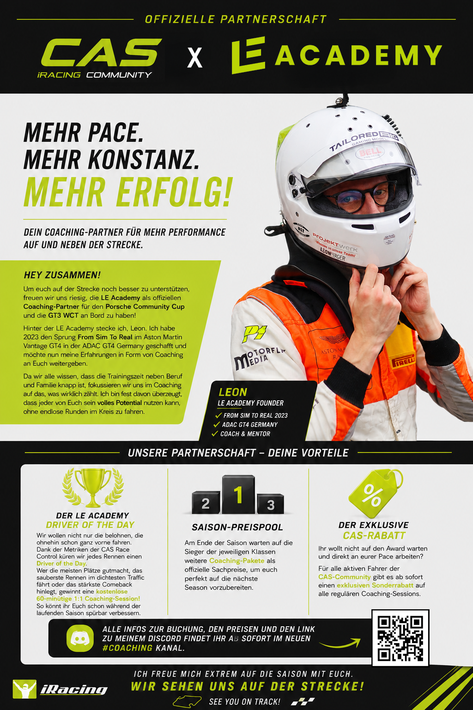

🤝 Offizielle Partnerschaft: CAS × LE Academy
Mehr Pace. Mehr Konstanz. Mehr Erfolg — unser neuer Coaching-Partner für den Porsche Community Cup & die GT3 WCT

Wir freuen uns riesig, die LE Academy als offiziellen Coaching-Partner der CAS Community für den Porsche Community Cup und die GT3 WCT an Bord zu haben. Hinter der LE Academy steckt Leon, der 2023 den Sprung From Sim To Real im Aston Martin Vantage GT4 in der ADAC GT4 Germany geschafft hat — und nun seine Erfahrung an Euch weitergibt.
Da die Trainingszeit neben Beruf und Familie knapp ist, fokussiert sich das Coaching auf das, was wirklich zählt: schneller werden, ohne endlose Runden im Kreis zu fahren. Das Ziel — jeder Fahrer kann sein volles Potenzial nutzen.
🏆 LE Academy Driver of the Day
Dank der Metriken der CAS Race Control küren wir jedes Rennen einen Driver of the Day. Wer die meisten Plätze gutmacht, das sauberste Rennen im dichtesten Traffic fährt oder das stärkste Comeback hinlegt, gewinnt eine kostenlose 60-minütige 1:1-Coaching-Session — so verbessert Ihr Euch spürbar während der laufenden Saison.
🥇 Saison-Preispool
Am Ende der Saison warten auf die Sieger der jeweiligen Klassen weitere Coaching-Pakete als offizielle Sachpreise — um Euch perfekt auf die nächste Saison vorzubereiten.
🏷️ Der exklusive CAS-Rabatt
Ihr wollt nicht auf den Award warten und direkt an eurer Pace arbeiten? Für alle aktiven Fahrer der CAS-Community gibt es ab sofort einen exklusiven Sonderrabatt auf alle regulären Coaching-Sessions.
🏆 So wird der Driver of the Day ermittelt
Der Driver of the Day wird nach dem Rennen automatisch aus dem Race-Log bestimmt — und zwar bewusst nicht einfach der Rennsieger. Bewertet wird die beste Fahrt, nicht die beste Startposition.
In die Wertung fließen vier Kriterien ein, jeweils gewichtet:
- Gewonnene Positionen (Start → Ziel) — höchste Gewichtung (40 %)
- Aufholjagd / Recovery — wie weit sich ein Fahrer von seinem schlechtesten Punkt im Rennen wieder nach vorne gekämpft hat (20 %)
- Überholmanöver auf der Strecke (25 %)
- Sauberes Fahren — je weniger Incidents, desto besser (15 %)
Jedes Kriterium wird über das gesamte Feld normiert (vom schwächsten bis zum stärksten Wert), dann gewichtet zusammengezählt. Der Fahrer mit der höchsten Gesamtpunktzahl gewinnt.
Der Clou: Ein sauberer Start-Ziel-Sieg von der Pole bringt bei „gewonnenen Positionen“, „Aufholjagd“ und „Überholmanövern“ fast null Punkte — deshalb gewinnt fast immer derjenige, der sich durchs Feld nach vorne gearbeitet hat, und nicht der Rennsieger. Der Sieger kann den Titel trotzdem holen, aber nur, wenn er ihn sich wirklich verdient hat (z. B. Sieg aus dem hinteren Feld).
🏁 Leon Erger — From Sim To Real
Leon Erger (25) aus der Nähe von Köln begann seine Sim-Racing-Reise 2020 mit einem Ziel: sein Können auf einer echten Rennstrecke zu beweisen. Nach unzähligen Stunden im Sim — ergänzt durch Bücher, Training im Fitnessstudio und das Studieren von Onboards — fuhr er seinen allerersten Trackday in einem echten Rennwagen und unterbot bereits in Runde 10 die Zeit seines Coaches, eines Rennfahrers mit über zwei Jahrzehnten Erfahrung. Seine Lehre daraus: From Sim To Real ist möglich — und harte Arbeit schlägt Talent jedes Mal.
2023 lebte er den Traum und fuhr den Aston Martin Vantage GT4 in der ADAC GT4 Germany — allgemein als Sprungbrett zur DTM und eine der wettbewerbsstärksten GT4-Serien der Welt angesehen — wo er die Top 10 erreichte.
Er gründete die LE Academy, um Fahrern wie Euch zu helfen, Ready to Race zu werden: Schluss mit Raten, jetzt wird besser gefahren. Da er selbst vom Anfänger zum Top-10-Fahrer in einer Weltklasse-GT4-Meisterschaft wurde, kennt er den Weg aus eigener Erfahrung und konzentriert sich auf den Kern dessen, was Euch wirklich schneller macht — ganz ohne Hunderte ziellose Runden.
🏃 Über die CAS Community
Wo Leidenschaft auf Technologie trifft — ein Zuhause für iRacing-Enthusiasten
Willkommen bei CAS
Die CAS-iRacing Community ist ein einladender Ort für Sim-Racer aller Erfahrungsstufen. Egal ob du gerade erst mit iRacing anfängst oder ein erfahrener Rennfahrer bist — CAS bietet eine unterstützende Umgebung, um dein Fahren zu verbessern und Gleichgesinnte zu treffen.
cas-community.comInklusiv & Respektvoll
CAS legt Wert auf eine offene, nicht-elitäre Atmosphäre. Die Community setzt auf gegenseitige Unterstützung, faires Racing und Hilfe für schwächere Fahrer. Aggressives und respektloses Verhalten wird nicht toleriert — sauberes Racing und Sportlichkeit stehen an erster Stelle.
GrundwerteGegründet von Andreas Wuschnakowski
Seit 2021 aktiv im Sim-Racing, gründete Andreas CAS aus dem Wunsch heraus, eine bessere Community-Erfahrung für Einsteiger zu schaffen. Seine eigenen frühen Erfahrungen inspirierten den einladenden und unterstützenden Ansatz der Community.
Seit 2021🏁 Ligen & Serien
Gut organisierte Ligen und Einzelevents — nah am echten Motorsport
GT3 – WCT (World Championship Tour)
Die Flaggschiff-GT3-Serie der CAS Community. Fahre die besten GT3-Rennwagen der Welt in einer professionell organisierten Meisterschaft, die die Spannung des echten GT3-Rennsports nachbildet.
DetailsIEC – International Endurance Championship
Langstreckenrennen vom Feinsten. Schließe dich mit anderen Community-Mitgliedern zusammen für längere Rennen, die Konstanz, Strategie und Fahrermanagement testen. Ein echter Test für Teamwork.
Neu für die nächste Saison: Die IEC setzt auf iRaceControl für professionelles Rennmanagement — Live-Tracking, automatisierte Rennleitung, Incident-Logging und PDF-Rennberichte.
Wertungsregel: Teams müssen mindestens 90% der Renndistanz absolvieren, um Meisterschaftspunkte zu erhalten. Teams unterhalb der 90%-Schwelle werden gewertet, erhalten aber keine Punkte.
DetailsCombined Cup Pausiert
Ein rotierendes Einklassen-Format — jede Woche ein komplett anderes Auto. Die aktuelle Saison rotiert durch drei grundverschiedene Fahrzeuge: Radical, Ray FF1600 und einen TCR-Tourenwagen. Diese Mischung — High-Downforce-Prototyp, leichter Open-Wheeler und frontgetriebener Tourenwagen — macht den Combined Cup zu einer der anspruchsvollsten Serien der Community: Bremspunkte, Balance und Fahrstil müssen Woche für Woche neu gelernt werden. Kein Multiclass-Rennen.
Saison pausiert: Nach Lauf 4 wurde die 10. Saison des Combined Cup wegen zu geringer Beteiligung der angemeldeten Mitglieder pausiert. Die Ergebnisse der Läufe 1–4 bleiben unten dokumentiert. Eine Rückkehr in einer späteren Saison ist möglich — aktuelle Infos auf den Kanälen der CAS Community.
DetailsSFL Cup
Der SFL Cup bietet eine weitere wettbewerbsfähige Serie innerhalb der CAS Community. Regelmäßige Rennen mit Fokus auf sauberes, kompetitives Racing in einem gut strukturierten Meisterschaftsformat.
DetailsPCCD – Porsche Community Cup Deutschland
Markenpokal-Racing mit dem Porsche 911 GT3 Cup. Eine tolle Serie für enge, spannende Rennen, bei denen das Fahrkönnen den Unterschied macht statt Setup-Vorteile.
DetailsTSS – GT4
GT4-Racing in der CAS Community. Diese etwas langsameren, aber wendigen Fahrzeuge bieten einen fantastischen Einstiegspunkt für Fahrer, die in organisiertes Ligaracing einsteigen möchten.
Details🏁 PCCD Saison 5, Lauf 1 — Circuito de Jerez
Der Porsche Community Cup eröffnet seine fünfte Saison in Andalusien — ein Start-Ziel-Sieg im Heat für Alex Gründel, ein Reverse-Grid-Feature-Sieg für René Hollerung und ein Frühstart, der die Reverse-Pole kostete
🏆 Gründel, B. Schlosser, Meyers
🥇 Alex Gründel
🥈 Benjamin Schlosser
🥉 Dominique Meyers
Start-Ziel-Sieg · Schnellste Runde 1:41.418 · +7,72 s Vorsprung · Carl Sören Schober P16→P7 als Fahrer des Tages
🏆 Hollerung, Gründel, Barth
🥇 René Hollerung
🥈 Alex Gründel
🥉 Benedikt Barth
Reverse-Grid Top 8 · Hollerung von P3, schnellste Runde 1:41.718 · Gründel von P8 auf +1,09 s · Top 5 in unter 4 s
🏁 Zwei verschiedene Sieger
Ein sauberer Start in Saison 5: Alex Gründel gewann den Heat, René Hollerung das Feature, und Antonio Cursio kam nach einem Ausfall in Rennen 1 zurück und wurde in Rennen 2 Fahrer des Tages (P16→P8).
Reverse-Pole Clemens Müller-Rechner mit Frühstart und Durchfahrtsstrafe · Andre Brechmann einziger Ausfall · Nächster Lauf: Nürburgring, 30. Juli
📋 Kompletter Rennbericht
Schauplatz
Circuito de Jerez – Ángel Nieto, Andalusien — die 4,4 km lange, 15 Kurven zählende spanische Strecke wurde im Dezember 1985 eröffnet, hat eine kurze 600 m lange Start-Ziel-Gerade und einen unerbittlichen, technischen Rhythmus, der kaum Überholstellen lässt (die beste davon die Anbremszone am Ende der langen Geraden nach der Parabolika). 16 Porsche-Cup-Fahrer gingen zum Saison-5-Auftakt ins Rennen, im bekannten PCCD-Doppelsprint-Format: ein Heat mit stehendem Start, dann ein Reverse-Grid-Top-8-Feature.
Rennen 1 — 15 Runden, stehender Start
Alex Gründel machte aus der Pole einen kontrollierten Start-Ziel-Sieg, baute auf dem technischen Layout einen stetigen Puffer auf und fuhr auf der letzten Runde die schnellste Rennrunde (1:41.418), um mit +7,72 s zu gewinnen. Dahinter lief eine eng beieinanderliegende Top 5 in einem Drei-Sekunden-Fenster: Benjamin Schlosser kletterte von P5 auf zwei, Dominique Meyers rutschte von P2 auf drei, vor Willi Brand und Benedikt Barth. Die Fahrt des Heats kam von ganz hinten — Carl Sören Schober stürmte von P16 auf P7 (neun Plätze, elf Überholmanöver) und wurde Fahrer des Tages. Antonio Cursio war der frühe Ausfallkandidat: früher Schaden und ein Reparaturstopp in Runde 2 warfen ihn eine Runde zurück auf P16, das einzige Auto abseits der Führungsrunde.
Top 5 Rennen 1: Gründel, B. Schlosser, Meyers, Brand, Barth. Schnellste Runde: Alex Gründel, 1:41.418.
Rennen 2 — 15 Runden, Reverse-Grid Top 8
Die Top-8-Umkehr setzte Clemens Müller-Rechner auf die Reverse-Pole und drehte Gründel auf acht — doch Müller-Rechner erwischte einen Frühstart, kassierte eine Durchfahrtsstrafe, absolvierte sie in Runde 1 und fiel auf einen aufgeholten P10 zurück. René Hollerung, nur auf drei zurückgesetzt und der bestplatzierte der echten Spitzenfahrer, übernahm früh die Kontrolle, fuhr die schnellste Runde (1:41.718) und verwaltete den Vorsprung bis ins Ziel. Gründel schnitt sich von acht zurück und holte ihn über die Schlussrunden ein — am Ende fehlten nur +1,09 s zum Doppelsieg. Benedikt Barth, Remo Grossenbacher (von P10) und Willi Brand komplettierten eine Top 5 innerhalb von vier Sekunden. Antonio Cursio holte sich mit einer sauberen Fahrt von P16 auf P8 die Wiedergutmachung zum Fahrer des Tages; Carl Sören Schobers kampfbetonter Abend (renn-höchste 15 Strafpunkte, späte schwarze Flagge) warf ihn auf P12; Andre Brechmann war der einzige Ausfall, abgestellt nach sieben Runden.
Top 5 Rennen 2: Hollerung, Gründel, Barth, Grossenbacher, Brand. Schnellste Runde: René Hollerung, 1:41.718.
Notizen aus der Kabine
- Saison 5 umfasst 16 Rennen mit Punkten bis P20 und einem Streichresultat — und, zum ersten Mal, Preisgeld für die ersten drei.
- Die Knappheit an Überholstellen in Jerez zeigte sich im Heat, der sich an der Spitze auseinanderzog, während das Reverse-Grid-Feature den engen Zweikampf lieferte, für den das Format gemacht ist.
- Nächster Lauf: der Nürburgring, Deutschland, am 30. Juli 2026.
Zusammenfassung des CAS-Community-Twitch-Broadcasts von Thomas Herbrig. Ergebnisse, Rundenzeiten, Startaufstellungen und Strafpunkte aus dem iRacing-Ergebnis (Subsession 87246070), abgeglichen gegen die offizielle CAS League Scoring (CLS)-Datenbank für CAS PCCD Saison 5.
🏁 PCCD Lauf 8 — Okayama (Saisonfinale)
Rennbericht vom titelentscheidenden Porsche-Cup-Finale auf dem Okayama International Circuit — zwei Sprints, ein doppeltes DNF des Tabellenführers und ein neuer Meister der Saison 4, gekürt in Japan
🏆 Foth, Brand, B. Schlosser
🥇 Silvio Foth
🥈 Willi Brand
🥉 Benjamin Schlosser
Pole: Silvio Foth, 1:27.566 · Start-Ziel-Sieg mit weißer Weste (0 Strafpunkte) · Tabellenführer Andre Rajkovic verliert nach vier Runden die Verbindung
🏆 B. Schlosser, Felix, Weber
🥇 Benjamin Schlosser
🥈 Thomas Felix
🥉 Andy Weber
Reverse-Grid-Start · Schlosser von P6 zum Sieg · Ein Fünfer-Kampf trennte P2–P6 um nur 2,7 s · Rajkovic nahm den Neustart nicht auf
🏆 Silvio Foth — Meister der Saison 4
Pole, ein Sieg in Rennen 1 und ein erkämpfter P5 in Rennen 2 — während Titelrivale Andre Rajkovic in beiden Rennen leer ausging — machen Silvio Foth zum Meister der Saison 4, vor Rajkovic und Willi Brand.
Schnellste Runde R1: Silvio Foth, 1:27.532 · Schnellste Runde R2: Benjamin Schlosser, 1:28.267 · Offizielle Endpunkte stehen fest, sobald CLS Lauf 8 veröffentlicht
📋 Kompletter Rennbericht
Schauplatz
Okayama International Circuit — die enge, technische, 3,703 km lange Strecke mit 13 Kurven in Japan, einst Austragungsort des Pacific Grand Prix, an einem frühen Morgen-Slot bei warmem, trockenem Wetter (Streckentemperatur um die 22–23 °C). Da Stammgastgeber Thomas Herbrig beruflich verhindert war, kommentierte Andreas von cas_sim_tv (Casting TV). Elf Porsche-Cup-Fahrer waren für das Finale der Saison 4 am Start — und der Titel war noch offen: Andre Rajkovic führte auf Rohpunkten, trug aber ein Streichresultat, womit Silvio Foth in der Netto-Wertung vorn lag, mit Willi Brand als nahezu sicherem Dritten.
Qualifying
Ein zehnminütiges Lone Qualifying brachte hauchdünne Abstände an der Spitze: Silvio Foth holte die Pole in 1:27.566, nur 0,18 s vor Andre Rajkovic (1:27.749), mit Benjamin Schlosser (1:27.794) und Willi Brand (1:27.895) in einer von einer Drittelsekunde umspannten Top 4. Thomas Felix, Klaus Oberlaender, Jan Tobias Schrader, Andy Weber, Don Utz, Riccardo Cavoto und Jürgen Michael Kraft komplettierten das Feld.
Rennen 1 — 17 Runden, stehender Start
Foth setzte die Pole sauber um und baute auf einer Strecke, auf der Überholen schwer und Fehler an den rutschigen Kerbs teuer sind, einen kleinen, aber stetigen Vorsprung auf. Brand setzte sich auf zwei, Schlosser auf drei — das führende Trio setzte sich in identischen Cup-Autos rasch vom Mittelfeld ab.
Der saisonprägende Moment spielte sich dahinter ab: Andre Rajkovic, in der Spitzengruppe unterwegs und mit einer gefahrenen 1:27.730, verlor das Auto und schied dann nach nur vier Runden ganz aus dem Event aus — ein Nullresultat für den Formfahrer der Meisterschaft. Von vorn kontrollierte Foth das Rennen schlicht, fuhr die schnellste Rennrunde (1:27.532) und kam mit einer makellosen weißen Weste ins Ziel.
Ergebnis Rennen 1: Foth, Brand, B. Schlosser, Schrader, Utz, Felix, Oberlaender, Weber, Cavoto, Kraft; Rajkovic DNF. Schnellste Runde: Silvio Foth, 1:27.532.
Rennen 2 — 17 Runden, Reverse-Grid Top 8
Das Reverse-Grid stellte Andy Weber auf die Pole, daneben Klaus Oberlaender, während die Frontleute aus Rennen 1 tief im Feld vergraben waren — Schlosser Sechster, Brand Siebter, Foth Achter. Ruhe kehrte nie ein: eine Berührung in Runde 1 warf Oberlaender zurück, und ein rollender Fünfer-Zug formte sich um die Minor-Plätze. Benjamin Schlosser, nur auf Sechs gedreht, schnitt sich binnen weniger Runden hindurch und entschwand — eine schnellste Rennrunde nach der anderen.
Dahinter kam das Rennen des Abends: Thomas Felix, Andy Weber, Jan Tobias Schrader, Foth und Don Utz fuhren die zweite Hälfte Stoßstange an Stoßstange, nur 2,7 s trennten P2 bis P6 im Ziel. Der Brennpunkt war der Dreikampf Foth–Brand–Utz — Brand wurde außen weit, erzwang Kontakt und musste den Platz zurückgeben, das Karma ließ ihn als Siebten zurück. Foth rettete P5, was völlig reichte. Felix holte einen starken P2, Weber kämpfte sich auf P3 zurück.
Ergebnis Rennen 2: B. Schlosser, Felix, Weber, Schrader, Foth, Utz, Brand, Oberlaender, Cavoto, Kraft; Rajkovic DNS. Schnellste Runde: Benjamin Schlosser, 1:28.267.
Meisterschaftsbild
Das Finale entschied den Titel klar. Da Andre Rajkovic in beiden Rennen leer ausging, sicherte sich Silvio Foth — Pole, ein Sieg in Rennen 1 und P5 in Rennen 2 — den Titel im Porsche Community Cup Saison 4. Rajkovic hält dank seiner Siege früher in der Saison Platz zwei, Willi Brand wird Dritter. Benjamin Schlossers P3/P1-Wochenende war die Formfahrt des Finales. Die offiziellen Endpunkte stehen fest, sobald CLS die Wertung von Lauf 8 veröffentlicht.
Notizen aus der Kommentar-Kabine
- Okayama gilt als notorisch überholfeindlich, und das zeigte sich — Rennen 1 zog sich vorn zur Prozession auseinander, während das Reverse-Grid von Rennen 2 das enge Side-by-Side-Racing lieferte, für das das Format gemacht ist.
- Silvio Foth gab der Kabine erstmals seine Onboard-Kamera frei — eine ruhige, konzentrierte Fahrt zu Sieg und Titel.
- Post-Race-Interviews: Audio-Probleme hielten Jan Tobias Schrader aus der Leitung, doch Rennsieger Benjamin Schlosser („fünf Plätze gutgemacht — vorn hatte ich nur mich selbst als Gegner“) und Don Utz schalteten sich zu und ließen den Foth–Brand-Kontakt sowie eine reibungslose erste Saison unter dem neuen CLS-Scoring-System Revue passieren.
- Die Anmeldesaison läuft: Porsche Cup Saison 5 startet am 16. Juli in Jerez — diesmal ohne Startgeld und erstmals mit Preisgeld (50/30/20 iRacing $ für die Top 3, mindestens 7 Rennen). Auch GT3 WCT, SFL Cup und der NASCAR CAS Cup rollen auf der neuen CLS-Plattform an.
Zusammenfassung des vollständigen Casting-TV-/sim_racing_broadcast-Finalstreams. Ergebnisse, Rundenzeiten und Startaufstellung aus dem iRacing Event Result (Subsession 86541543) und abgeglichen mit dem offiziellen CAS-League-Scoring-(CLS)-Roster & den Standings für CAS PCCD Saison 4.
🏁 SFL Cup Saison 8, Lauf 2 — Mugello
CAS Super Formula Lights Cup · Saison 8 · Lauf 2 · Autodromo Internazionale del Mugello (Grand Prix) · 8. Juli 2026 · 13 Fahrer · Einzelqualifying + zwei 13-Runden-Sprints (Rennen 2 = Top-10-Reverse-Grid) · SF Lights 324 · trocken, Strecke 25→31 °C · live auf cas_sim_tv
🏆 Marx, Grabowski, Hoffmann
🥇 Pascal Marx — Dark Horse Motorsport · Pole & Sieg
🥈 Lucian Grabowski — GermanSimracing.de · +0,76 s
🥉 David Hoffmann — Dark Horse Motorsport
Pole: Marx (1:37.065) · schonte seine Reifen in der Hitze · Hoffmann fuhr die schnellste Runde (1:36.816) · Friedrich Luhn dreht sich · Thomas Felix fällt aus
🏆 Grabowski, Chmielewski, Werner
🥇 Lucian Grabowski — von Reverse-Grid-P9
🥈 Kevin Chmielewski — Atzen Motorsport
🥉 Eike Werner — außen an Wlach vorbei
Bernhard Wlach P4 · Thomas Herbrig ein starker P5 · Marx kämpft sich auf P7 mit der schnellsten Runde (1:37.053) · ein fünf Autos breiter Startcrash in Kurve 1 erwischt vier Fahrzeuge
⚡ Grabowski baut die Führung aus
Lauf-Podium (kombiniert, laut CLS): 🥇 Lucian Grabowski · 🥈 Kevin Chmielewski · 🥉 Pascal Marx. Grabowski sammelte an diesem Tag 58 Punkte und führt die Meisterschaft nun mit 119 Punkten an.
Thomas Herbrig (CAS Tech Performance grün) liegt nach seinem P5 in Rennen 2 auf Gesamtrang 5.
📋 Kompletter Renn-Bericht
Schauplatz
Das Autodromo Internazionale del Mugello in den toskanischen Hügeln ist ein schneller, fließender Grand-Prix-Kurs, der Mut durch seine geschwungenen Esses belohnt. 13 Fahrer gingen in identischen SF Lights 324 an den Start von Lauf 2 des CAS Super Formula Lights Cup, auf trockener Strecke, die sich von 25 auf 31 °C aufheizte. Format: Einzelqualifying, dann zwei 13-Runden-Sprints — Rennen 1 von der Startaufstellung, Rennen 2 im Top-10-Reverse-Grid. Live übertragen auf cas_sim_tv.
Qualifying
Pascal Marx holte die Pole in 1:37.065, vor Lucian Grabowski (1:37.216) und David Hoffmann (1:37.328) — die Top drei lagen keine Viertelsekunde auseinander.
Rennen 1 — stehender Start
Marx verwandelte die Pole in seinen ersten Saisonsieg und schonte in der Hitze sorgfältig seine Reifen, während Grabowski (P2, +0,76 s) und Hoffmann (P3, schnellste Runde 1:36.816) ihm folgten, aber nie in Schlagdistanz kamen. Die besten Zweikämpfe fanden weiter hinten statt, wo sich Bernhard Wlach nach einem schwachen Start mit langen, fairen Duellen zurückkämpfte. Es war ein saubereres, überholarmeres Rennen als in Fuji. Friedrich Luhn drehte sich, Thomas Felix fiel aus.
Rennen 2 — Reverse Grid
Das Reverse-Grid-Rennen entschied sich in der ersten Kurve: Ein fünf Autos breiter Startcrash in Kurve 1 erwischte vier Fahrzeuge, wobei Marx als unschuldiges Opfer von hinten abgeräumt wurde. Von P9 aus kämpfte sich Grabowski an die Spitze und kontrollierte das Rennen von vorn. Kevin Chmielewski wurde P2, und Eike Werner ging außen an Wlach vorbei auf P3, sodass Bernhard Wlach P4 und Thomas Herbrig ein starker P5 blieb. Marx kämpfte sich auf P7 mit der schnellsten Runde (1:37.053) zurück. David Hoffmann schied nach einem Crash aus und fiel in der Meisterschaft von Rang 2 auf Rang 6.
Lauf-Podium & Meisterschaft
Kombiniertes Lauf-Podium (laut CLS): P1 Lucian Grabowski, P2 Kevin Chmielewski, P3 Pascal Marx. Grabowski sammelte an diesem Tag 58 Punkte.
Meisterschaft nach Lauf 2 (CLS): P1 Lucian Grabowski 119 · P2 Kevin Chmielewski 96 · P3 Pascal Marx 85 · P4 Eike Werner 81 · P5 Thomas Herbrig 79 · P6 David Hoffmann 77 · P7 Bernhard Wlach 73. Alle Renn-Tabellen und die 2D-Replays gibt es im SFL Race Center.
Nächster Lauf
Lauf 3 geht am 22. Juli 2026 zum Algarve International Circuit.
Erzählung basiert auf der cas_sim_tv-Übertragung. Klassifizierung und Rundendaten stammen aus dem offiziellen iRacing-Ergebnis; Meisterschaftspunkte von CAS League Scoring (CLS).
🏁 SFL Cup Saison 8, Lauf 1 — Fuji
CAS Super Formula Lights Cup · Saisonauftakt Saison 8 · Fuji Speedway (Grand Prix) · 24. Juni 2026 · Doppel-Sprint — Grabowski gewinnt beide Rennen
🏆 Grabowski, Marx, Hoffmann
🥇 Lucian Grabowski — GermanSimracing.de · Pole & Sieg
🥈 Pascal Marx — Dark Horse Motorsport · +3,5 s
🥉 David Hoffmann — Dark Horse Motorsport
Pole: Grabowski (1:32.226) · führte jede Runde & schnellste Runde (1:32.522) · Thomas Felix P15→P7 · Marcus Rothe am Start raus
🏆 Grabowski, Hoffmann, Chmielewski
🥇 Lucian Grabowski — von Reverse-Grid-P10
🥈 David Hoffmann — +0,52 s
🥉 Kevin Chmielewski — Atzen Motorsport
Grabowski siegt von P10 mit schnellster Runde (1:32.542) · Marcus Rothe P15→P5 · Reverse-Pole Wlach fiel auf P7 · vier Ausfälle
⚡ Grabowskis perfekter Tag
Pole, zwei Siege, zwei schnellste Runden — Lucian Grabowski verlässt Fuji mit maximaler Ausbeute und der Meisterschaftsführung mit 61 Punkten, vor David Hoffmann (52) und Kevin Chmielewski (46).
Thomas Herbrig (CAS Tech Performance grün) ist nach P9/P4 Gesamt-P4.
📋 Vollständiger Rennbericht
Schauplatz
Fuji Speedway, Grand-Prix-Layout — Japans schneller Kurs mit einer der längsten Geraden des Kalenders, die in eine enge Haarnadel im ersten Sektor und ein technisches Infield mündet. Der echte Saisonauftakt der Saison 8 des CAS Super Formula Lights Cup nach dem Testrennen in Watkins Glen. 15 Fahrer in identischen SF Lights 324. Format: Einzelqualifying, dann zwei 13-Runden-Sprints — Race 1 von der Aufstellung, Race 2 im Top-10-Reverse-Grid.
Qualifying
Einzelqualifying — diesmal keine Windschattenspiele. Lucian Grabowski holte die Pole in 1:32.226, zwei Hundertstel vor Pascal Marx (1:32.258). David Hoffmann (1:32.567), Kevin Chmielewski und Peter Pistorius komplettierten die Top 5; Moderator Andreas Wuschnakowski stand P6.
Race 1 — stehender Start
Grabowski setzte die Pole sauber um und wurde über 13 Runden nie überholt, fuhr die schnellste Runde (1:32.522) und zog 3,5 s vor Marx davon, Hoffmann knapp dahinter Dritter. Matthias Eggert kam P8→P4 und Thomas Felix fuhr die Fahrt des Rennens von Startplatz 15 auf P7. Hinten kam Quali-P7 Marcus Rothe ohne gewertete Runde nicht ins Ziel, und Peter Pistorius fiel von P5 auf P14.
Race 2 — Reverse Grid
Die Top Ten wurden umgedreht, Bernhard Wlach auf die Pole, Grabowski zurück auf P10. Es spielte kaum eine Rolle: Grabowski pflügte zum Double durch, wieder schnellste Runde (1:32.542) und nur 0,52 s vor Hoffmann. Chmielewski wurde Dritter, während Marcus Rothe von P15 auf P5 raste und seinen Race-1-Ausfall wettmachte. Reverse-Pole Wlach fiel auf P7.
Bemerkenswerte Vorfälle & Stewarding
- Marcus Rothe — am Start von Race 1 raus (0 Runden), dann P5 in Race 2: das Comeback des Laufs.
- Vier Race-2-Ausfälle — Dominic Waack, Peter Pistorius, Thomas Felix und Florian Brechmann fielen alle aus; Brechmann wurde dennoch als P12 gewertet (9 Pkt.).
- Am saubersten in Race 1 — David Hoffmann und Andreas Wuschnakowski beendeten es mit null Incidentpunkten.
Meisterschaft nach Lauf 1
P1 Lucian Grabowski 61 Pkt. (25+30+6) · P2 David Hoffmann 52 · P3 Kevin Chmielewski 46 · P4 Thomas Herbrig 40 · P5 Pascal Marx 40 · P6 Eike Werner 37 · P7 Andreas Wuschnakowski 35 · P8 Bernhard Wlach 33 · P9 Matthias Eggert 33 · P10 Marcus Rothe 26. Komplette Einzelrennen-Tabellen und die 2D-Replays im SFL Race Center.
Erzählung basiert auf der cas_sim_tv-Übertragung. Klassement und Meisterschaftspunkte stammen aus der offiziellen CAS League Scoring (CLS)-Rundenseite; Rundenzeiten und Abstände aus der In-Sim-Telemetrie.
📝 Aktueller Rennbericht
CAS GT3 WCT Saison 13 · Lauf 6 · Adelaide Street Circuit · 28. Juli 2026 — Becker führt 34 Runden und verliert alles in zwei Kurven
🏆 Severn, Zörlaut, Christiansen
🥇 Mario Severn — Mercedes-AMG GT3 2020
🥈 Lukas Zörlaut — Ferrari 296 GT3 · +4,81 s
🥉 Justin Christiansen — BMW M4 GT3 EVO · +12,36 s
46 Runden in ~60 Minuten auf dem 3,219 km langen Stadtkurs · Pole und schnellste Rennrunde für Maurice Becker (1:16.759 / 1:16.902) · 32 Nennungen, 30 Starter
💥 47 Sekunden, dann nichts
Maurice Becker holte die Pole, führte die Runden 1–34 und baute 47 Sekunden Vorsprung auf — dann gaben ein Fehler in Runde 33 und ein schwererer in Runde 35 die Führung an Mario Severn ab.
Es war der einzige Führungswechsel des Rennens. Becker rettete P5 und verlor den Kampf um P4 um 0,105 s.
⚡ Zochers 51-Sekunden-Rennen
Der P2-Qualifikant sah 51 Sekunden nach Grün eine schwarze Flagge, die sich in der Übertragung niemand erklären konnte. Er saß sie in Runde 2 ab, verlor 19 Plätze und wurde eine Runde zurück 14.
Die AM-Klasse gewann Benjamin Warnow (P6); Driver of the Day wurde Björn Krumpschmied — 12 Plätze gut, 25 Überholmanöver, null Incidents.
📋 Vollständiger Rennbericht
Rahmen
Adelaide Street Circuit — der Adelaide Parklands Circuit in Südaustralien, hier in der Kurzvariante: 3,219 km, 14 Kurven, die auch die Supercars nutzen. Adelaide war von 1985 bis 1995 Austragungsort des Großen Preises von Australien, stets als Saisonfinale, und entschied die Weltmeisterschaft 1986 und im Finale 1994. Die Mauern stehen überall dicht, ein fieser Randstein hebt die Autos aus — wie Andreas vor dem Start sagte: „Adelaide wird seine Opfer fordern.“ Lauf 6 der Saison 13 markierte die Halbzeit, auf ausgedünntem Feld ohne Yannick Wonnenberg und Michael Gasser.
Qualifying
Maurice Becker (#49, Porsche) holte die Pole mit einer 1:16.759, vor Mike Zocher (BMW, 1:16.902), Mario Severn (Mercedes-AMG, 1:16.960) und Lukas Zörlaut (Ferrari, 1:17.045). Markus Groß, Justin Christiansen, Christian Hartl, Dennis Richter, Robert Gradwohl und Klaus Oberlaender komplettierten die Top Ten — die ganze Gruppe innerhalb von sechs Zehnteln, 24 der 30 Qualifikanten innerhalb von 1,5 s auf die Pole.
Rennen — Beckers Rennen zum Verlieren
Maurice Becker setzte die Pole um und fuhr davon: Führung in den Runden 1 bis 34, schnellste Rennrunde, rund 47 Sekunden Vorsprung — genug, dass ihn der Stopp in Runde 29 nichts kostete. Dann holte Adelaide ihn sich: ein Vier-Sekunden-Fehler in Runde 33 und in Runde 35 ein schwererer, der eine weitere Boxenfahrt und rund 25 Sekunden kostete. Mario Severn übernahm in Runde 35 die Führung und gab sie nicht mehr her — Sieg mit +4,81 s vor Zörlaut, Justin Christiansen Dritter von P6, Christian Hartl Vierter. Becker rettete P5, um 0,105 s an P4 vorbei.
Boxenphase & Strategie
Alle absolvierten den einen Pflichtstopp, eng gebündelt zwischen Runde 26 und 29. Anders als es die Standzeiten nahelegen, entschied der Stopp das Rennen nicht: Gemessen am Gesamt-Rundenzeitverlust kostete Severns Boxenrunde +35 s, die von Zörlaut +34 s und die von Becker +31 s — die Spitze kam in derselben Reihenfolge heraus, in der sie hineinfuhr. Der Schaden entstand bei denen, die zweimal in die Boxengasse mussten.
Duelle des Tages
- P4 um 0,105 s — Christian Hartl hielt den aufholenden Maurice Becker nach fast einer Stunde hinter sich, +14,509 s zu +14,614 s.
- Severn gegen Zörlaut um den Sieg — im Schlussstint nur wenige Sekunden auseinander, am Ende +4,81 s.
- Osiewacz’ Aufholjagd — von P31 bis auf rund P13 mit der besten Überholbilanz des Feldes (+23 netto), bevor in Runde 37 die Mauer kam.
Zwischenfälle & Ausfälle
- Mike Zochers frühe schwarze Flagge — 51 Sekunden nach Grün gezeigt, in Runde 2 abgesessen; live konnte sie niemand erklären, Severns Vermutung nach dem Rennen war ein nicht korrekt abgesessener Slowdown. 19 Plätze verloren, P14 im Ziel.
- Klaus Oberlaender schaffte zwei Runden mit sechs Fahrten durch die Boxengasse; Thomas Kuebler sammelte zwei schwarze Flaggen und hing ab Runde 32 in einer Boxengassen-Schleife fest.
- Härtestes Rennen — Kevin Osiewacz mit 14 Incidentpunkten vor Marcel Holtmann (12). Zehn Autos blieben ohne Incident, darunter der Sieger und das komplette AM-Podium.
- Ausfälle — ein Ausfall (Osiewacz, Runde 37) sowie vier Ausschlüsse und ein Nichtstarter im CLS-Ergebnis.
Endklassement — Top 10 (gesamt)
P1 Mario Severn (Mercedes-AMG, von P3, 0 Inc) · P2 Lukas Zörlaut (Ferrari, +4,81 s) · P3 Justin Christiansen (BMW, +12,36 s, von P6) · P4 Christian Hartl (BMW, +14,51 s) · P5 Maurice Becker (Porsche, Pole, SR 1:16.902, +14,61 s) · P6 Benjamin Warnow (Ferrari, +27,77 s, AM-Sieg) · P7 Christoph Kiesel (Ford Mustang, +33,44 s) · P8 Markus Groß (Ferrari, +33,69 s) · P9 Hubert Diethard (Mercedes-AMG, +49,19 s) · P10 Michael Gessner (BMW, +55,13 s). Bester AM: Benjamin Warnow (P6). Vollständiges 32-Fahrer-Klassement im Race Center.
Notizen abseits der Strecke
- Driver of the Day — Björn Krumpschmied (#666, CAS Tech Performance Red, AM): Merit-Score 0,924 — 12 Plätze gutgemacht von P30, 13 von einem Tief auf P31 zurückgeholt, 25 Überholmanöver, null Incidents. Dahinter: Hubert Diethard, Dirk Bolte, Florian Eigner und Markus Heinzl.
- Urteil des Siegers — Mario Severn, der einzige Fahrer im Interviewraum: „Endlich hat es geklappt, aber ich hatte auch wahnsinnig Glück.“
- Klassen-Umstufungen — Thomas Kuebler war für diesen Lauf in die AM-Klasse zurückgestuft; nach seiner Renn-Performance wurde Florian Eigner in die Pro-Klasse hochgestuft.
- Nächster Lauf — Lauf 7, Hockenheimring Baden-Württemberg (Grand Prix), Dienstag, 4. August 2026.
Erzählung aus der cas_sim_tv-Übertragung (Andreas). Klassement, Pro/AM-Einteilung und Punkte aus CAS League Scoring (CLS); Abstände, Bestzeiten und Incidentpunkte aus dem iRacing-Rennergebnis (Subsession 87540949); Diagramme und 2D-Replay aus dem iRaceControl-Telemetrie-Log.
🏆 🏆 Meisterschaftsstand — Saison 13
Live-GT3-WCT-Meisterschaftstabellen nach Lauf 5 (Virginia International Raceway), direkt aus CAS League Scoring (CLS). Pro- und AM-Punkte enthalten Teilnahmepunkte; die Saison umfasst 12 Läufe.
Pro-Meisterschaft
| Pos | # | Fahrer | Team | Läufe | Inc | Punkte |
|---|---|---|---|---|---|---|
| 1 | 26 | Mike Zocher | Speed Monkeys | 4 | 15 | 148 |
| 2 | 89 | Lukas Zörlaut | Neon Simsports Orange | 5 | 17 | 136 |
| 3 | 14 | Marius Becker | Speed Monkeys II | 5 | 24 | 132 |
| 4 | 49 | Maurice Becker | M&J Downforce | 5 | 35 | 132 |
| 5 | 81 | Markus Groß | Melanzani Racing | 4 | 17 | 120 |
| 6 | 1 | Yannick Wonnenberg | Speed Monkeys | 3 | 6 | 118 |
| 7 | 69 | Mario Severn | Dat muss Kesseln - Veteranen | 5 | 15 | 112 |
| 8 | 98 | Andre Rajkovic | Team Heusinkveld | 5 | 20 | 106 |
| 9 | 63 | Dennis Richter | Speed Monkeys II | 5 | 34 | 94 |
| 10 | 60 | Robert Gradwohl | Styrian Racing | 5 | 26 | 83 |
| 11 | 08 | Gregor Micewski | Neon Simsports Orange | 4 | 10 | 82 |
| 12 | 67 | Zilvio Korenjak | Sydney Sweeney Academy | 2 | 7 | 78 |
| 13 | 16 | Kevin Osiewacz | Dat muss Kesseln - Veteranen | 4 | 33 | 74 |
| 14 | 11 | Michael Gasser | — | 2 | 3 | 72 |
| 15 | 93 | Aaron Hatcher | Dat muss Kesseln | 5 | 37 | 67 |
| 16 | 21 | Michele Grupe | UNIQUE-SIM Motorsports | 2 | 11 | 66 |
| 17 | 13 | Alvin Frauenknecht | Melanzani Racing | 4 | 21 | 64 |
| 18 | 86 | Klaus Oberländer | Speed Monkeys II | 5 | 36 | 63 |
| 19 | 64 | Tim Eilzer | Melanzani Racing | 2 | 12 | 54 |
| 20 | 15 | Justin Christiansen | Neon Simsports Blue | 3 | 23 | 43 |
| 21 | 33 | Mike Girenz | FRAMIDI Racing | 5 | 26 | 36 |
| 22 | 62 | Fritz Morawetz | Neon Simsports Red | 4 | 29 | 36 |
| 23 | 46 | Michael Gessner | VR46 Racing | 4 | 32 | 36 |
| 24 | 41 | Kevin Homburg | CAS Tech Performance Red | 3 | 26 | 30 |
| 25 | 83 | Christian Hartl | Melanzani Racing 01 | 3 | 11 | 28 |
| 26 | 99 | Dominique Meyers | WS Racing eSports #Blue | 3 | 40 | 28 |
| 27 | 61 | Florian Roessler | Neon Simsports Green | 1 | 2 | 24 |
| 28 | 05 | Andy Weber | DanKüchen Motorsport I | 2 | 25 | 12 |
AM-Meisterschaft
| Pos | # | Fahrer | Team | Läufe | Inc | Punkte |
|---|---|---|---|---|---|---|
| 1 | 222 | Elias Schleich | Prime Racing Team | 5 | 16 | 196 |
| 2 | 404 | Benjamin Warnow | Neon Simsports Red | 5 | 27 | 166 |
| 3 | 117 | Ricardo Still | Neon Simsports Blue | 5 | 50 | 132 |
| 4 | 173 | Thomas Kuebler | CAS Tech Performance Red | 4 | 26 | 130 |
| 5 | 146 | Christoph Kiesel | WS Racing eSports #Blue | 5 | 49 | 124 |
| 6 | 360 | Robert Zellner | Neon Simsports Orange | 5 | 39 | 114 |
| 7 | 166 | Tobias Strebe | Dat muss Kesseln | 5 | 23 | 112 |
| 8 | 198 | Michael Endres | GTunit | 5 | 48 | 106 |
| 9 | 610 | Dominik Schmitz | Prime Racing Team | 4 | 31 | 104 |
| 10 | 151 | Markus Heinzl | Styrian Racing | 5 | 42 | 97 |
| 11 | 334 | Dirk Bolte | FRAMIDI Racing | 5 | 52 | 97 |
| 12 | 777 | Hubert Diethard | DanKüchen Motorsport I | 3 | 14 | 88 |
| 13 | 581 | Manfred Baar | DanKüchen Motorsport II | 4 | 21 | 81 |
| 14 | 666 | Björn Krumpschmied | CAS Tech Performance Red | 4 | 40 | 74 |
| 15 | 244 | Danny Platzer | DanKüchen Motorsport II | 3 | 14 | 70 |
| 16 | 555 | Christian Kaschta | Dat muss Kesseln | 4 | 19 | 70 |
| 17 | 242 | Marcel Holtmann | Neon Simsports Green | 5 | 74 | 70 |
| 18 | 118 | Bernhard Wlach | DanKüchen Motorsport I | 3 | 8 | 48 |
| 19 | 968 | Thomas Herbrig | CAS Tech Performance Black | 4 | 14 | 44 |
| 20 | 181 | Djavit Segashi | Neon Simsports Green | 5 | 22 | 39 |
| 21 | 101 | Don Utz | CAS Tech Performance Black | 2 | 4 | 28 |
| 22 | 232 | Joe Wohl | VANTA Motorsport | 2 | 11 | 21 |
| 23 | 185 | Daniel Weidmann | — | 1 | 10 | 20 |
| 24 | 967 | Ralph Mielke | CAS Tech Performance Black | 2 | 3 | 18 |
| 25 | 208 | Pascal Benz | VANTA Motorsport | 1 | 10 | 16 |
| 26 | 309 | Markus Schmidt-Balzer | VANTA Motorsport | 4 | 40 | 16 |
| 27 | 921 | Andreas Bastian | — | 2 | 17 | 1 |
Team-Meisterschaft
Beste 2 Fahrer pro Lauf, beste 9 Läufe, nur Rohpunkte.
| Pos | Team | Fahrer | Punkte |
|---|---|---|---|
| 1 | Speed Monkeys | 2 | 231 |
| 2 | Speed Monkeys II | 3 | 171 |
| 3 | Melanzani Racing | 3 | 168 |
| 4 | Neon Simsports Orange | 3 | 156 |
| 5 | Dat muss Kesseln - Veteranen | 3 | 125 |
| 6 | M&J Downforce | 1 | 110 |
| 7 | Prime Racing Team | 3 | 90 |
| 8 | Team Heusinkveld | 1 | 71 |
| 9 | Sydney Sweeney Academy | 1 | 68 |
| 10 | UNIQUE-SIM Motorsports | 1 | 56 |
| 11 | Dat muss Kesseln | 3 | 47 |
| 12 | Neon Simsports Red | 2 | 44 |
| 13 | Styrian Racing | 2 | 43 |
| 14 | Neon Simsports Green | 3 | 28 |
| 15 | Melanzani Racing 01 | 1 | 23 |
| 16 | WS Racing eSports #Blue [CAS WCT] | 2 | 22 |
| 17 | Neon Simsports Blue | 2 | 21 |
| 18 | CAS Tech Performance Red | 3 | 19 |
| 19 | FRAMIDI Racing | 2 | 15 |
| 20 | DanKüchen Motorsport II | 2 | 12 |
| 21 | VR46 Racing | 1 | 7 |
| 22 | GTunit | 1 | 3 |
Quelle: offizielle CAS-League-Scoring-(CLS)-Wertung für GT3 WCT Saison 13, nach Lauf 5 von 12. Pro/AM-Punkte = Rennpunkte + Teilnahme − Strafen; Team = beste 2 Fahrer pro Lauf (beste 9 Läufe), Rohpunkte. Läufe = gestartete Runden, Inc = Incidentpunkte der Saison. Die Tabellen aktualisieren sich auf CLS, sobald Ergebnisse bestätigt sind.
📚 Vorheriges Rennen
CAS GT3 WCT Saison 12 · Lauf 11 · Thruxton Circuit · 2. Juni 2026 · Zörlaut siegt spät — Wonnenberg holt vorzeitig den Titel
🏆 Zörlaut, Wonnenberg, Zocher
🥇 Lukas Zörlaut — NEON Sim Sports Blue, Mercedes-AMG GT3
🥈 Yannick Wonnenberg — Speed Monkeys, Lamborghini Huracán GT3 EVO
🥉 Mike Zocher — Speed Monkeys, Porsche 911 GT3 R
Pole: Wonnenberg (1:06.071) · Zörlaut P2 im Quali (1:06.290) · siegreiche Rennrunde 1:06.305 (FL), Siegmarge +11,20 s · 25 Fahrzeuge auf dem Grid
🏆 Coldron, Kiesel, Oberländer
🥇 Max Coldron — NEON Sim Sports Red, Ford Mustang GT3 · gesamt P6
🥈 Christoph Kiesel — WS Racing E-Sports, Ford Mustang GT3 · gesamt P7
🥉 Klaus Oberländer — Dan Küchen Motorsport, BMW M4 GT3 EVO · gesamt P8
AM-Pole: Klaus Oberländer (1:06.351, Grid P3 gesamt) · Coldron kam von Grid P10 zum AM-Sieg · die drei AM-Podiumsfahrzeuge im Ziel innerhalb von 2,03 Sekunden, alle in der Führungsrunde
⚡ Kontakt in der vorletzten Runde — und der Titel ist entschieden
Zörlaut jagte Wonnenberg den zweiten Stint über und kam endlich in der Allard-Schikane vorbei. Zwei Runden später beschädigte ein leichter Kontakt das Heck des Lambo; Zörlaut ließ Wonnenberg sportlich wieder vorbei — doch der ramponierte Huracán hatte keine Pace mehr, und Zörlaut fuhr den Sieg mit +11,20 s nach Hause.
Wonnenberg bestätigte im Interview, dass der Pro-Titel bereits letzte Woche in Magny-Cours rechnerisch fix war — das Phillip-Island-Finale wird zur Ehrenrunde.
📋 Vollständiger Rennbericht
Schauplatz
Thruxton Circuit, Hampshire — 3,79 km, die schnellste Rennstrecke Großbritanniens, mit theoretischen GT-Topgeschwindigkeiten jenseits der 300 km/h. Ein fließendes Layout, geprägt von Goodwood, Church und der schnellen Schwüngepassage nach Brooklands; Überholpunkte konzentrieren sich an der Allard-Schikane und am Ausgang des Club-Komplexes auf Start/Ziel.
Durchgehend trocken, kühler Abend. 25 Fahrer auf dem Grid — mehr als in Magny-Cours, gute Beteiligung für einen Nicht-Klassik-Lauf. Format: 1-Stunden-Rennen mit Pflichtboxenstopp, gefahren wurden 54 Runden.
Qualifying
Split-Format wie gewohnt: 15 Minuten AM, dann 15 Minuten Pro. In der AM-Klasse holte sich Klaus Oberländer (Dan Küchen Motorsport, BMW M4 GT3 EVO) die Pole mit 1:06.351 — schnell genug für Grid P3 in der Gesamtreihenfolge — vor Max Coldron (NEON Sim Sports Red, Mustang, 1:06.602) und Fritz Morawetz (1:06.629). Im Pro-Quali schnappte sich Yannick Wonnenberg die Pole mit 1:06.071, Lukas Zörlaut daneben mit 1:06.290 — nur 0,219 s Abstand. Benjamin Schlosser Pro-P3 (1:06.369, Grid P4), dahinter Dennis Richter und Mike Zocher.
Bemerkenswert: Dennis Ulli Richter sah im Aston Martin deutlich wohler aus als noch in Magny-Cours, qualifizierte sich auf P5. Maurice Becker direkt dahinter auf P7 (1:06.508) — ein starkes Quali, das in der ersten Runde wieder zerbröckelte.
Rennen — Chaos im hinteren Feld zum Auftakt
Der fliegende Start lief vorne sauber. Wonnenberg führte mit Zörlaut im Rückspiegel; Dennis Ulli Richter, Mike Zocher und Marius Becker bildeten dahinter eine Speed-Monkeys-Phalanx. Weiter hinten jedoch war die erste Runde brutal: Maurice Becker verlor seinen Porsche an der Campbell-Kurve in die Mauer, Gregor Micewski stand auf der Strecke, Dirk Bolte drehte sich, Michael Krieger kassierte Schaden. Justin Christiansen bekam eine Meatball-Flagge nach Kontakt mit Benjamin Schlosser; Benjamin Schlosser selbst gab in Runde 5 mit Totalschaden auf.
Vorne setzte Zörlaut Wonnenberg massiv unter Druck und schob sich kurzzeitig sogar an der Allard-Schikane vorbei, ehe der Lambo zurückkam. Die Rundenzeiten fielen auf 1:06.3er — eine Klasse für sich, nur Maurice Becker (auf wilder Aufholjagd) konnte da mithalten.
Boxenphase & zweiter Stint
Kühle Strecke, niedriger Verschleiß — das Feld arbeitete den Pflichtstopp früh ab, die Spitze deckte sich gegenseitig in etwa derselben Runde ab. Die Reihenfolge blieb Wonnenberg, Zörlaut, Zocher, Richter über den gesamten Boxenzyklus. Mitten im Stint setzte Maurice Becker die schnellste Rennrunde mit 1:06.412 auf seiner Aufholjagd von P20 — eine außergewöhnliche Leistung —, ehe er das Auto wieder verlor und letztlich mit vier Runden Rückstand ausschied.
In der AM-Klasse führte Klaus Oberländer vor Christoph Kiesel und Max Coldron, alle drei innerhalb von wenigen Sekunden. Die Reihenfolge änderte sich, als Oberländer unter Druck weit ins Gras nach Cobb kam und hinter Kiesel zurückfiel; später ging Coldron in der Schlussphase auf einer mutigen Innenlinie in die Allard-Schikane an Kiesel vorbei.
Die vorletzte Runde — wie der Sieg den Besitzer wechselte
Bis Runde 50 hatte Zörlaut den Abstand zu Wonnenberg auf unter eine halbe Sekunde rasiert. Zwei Runden vor Schluss machte er es endlich in der Allard-Schikane stick — der AMG hatte die bessere Linie raus, der Lambo war eingeschlossen. Dann ein kleiner Kontakt, der Wonnenbergs Heck beschädigte. Zörlaut ließ ihn sportlich wieder vorbei; doch der Huracán stand schräg, und Wonnenberg sagte es danach selbst klipp und klar: „Mein linkes Rad war schief, rechts ging fast gar nicht mehr.“ Zörlaut zog ohne Gegenwehr wieder vorbei und überquerte die Linie mit 11,20 Sekunden Vorsprung. Erster WCT-Sieg der Saison für den Mercedes — ein abgeklärter Lauf, getragen von Pace, nicht von Perfektion.
Kämpfe des Tages
- Zörlaut vs. Wonnenberg — das ganze Rennen im Kleinen. Wonnenberg verteidigte hart, Zörlaut wartete; ein Fehler, eine Schikane, eine winzige Berührung — und der Sieg war entschieden.
- Der AM-Dreikampf — Coldron, Kiesel und Oberländer im Ziel von 2,03 Sekunden getrennt, in den letzten 10 Minuten wechselte die Führung zweimal. Coldrons zweiter Klassensieg in Folge.
- Hendrik Stanzels Aufholjagd — leise von P13 in der Startaufstellung auf P5 vorgearbeitet, Marius Becker und Max Coldron sauber kassiert — klassischer Stanzel.
- Speed Monkeys — die Antwort am Ende — Mike Zocher und Marius Becker tauschten im letzten Drittel P3; Zocher holte sich den Platz mit zwei Runden vor Schluss in der Club-Schikane.
Bemerkenswerte Vorfälle
- Benjamin Schlosser — in Runde 1 in den Kontakt mit Christiansen verwickelt, Aufgabe in Runde 5.
- Justin Christiansen — Meatball-Flagge nach frühem Kontakt; Reparaturstopp, hielt 51 Runden durch, dann Aufgabe mit drei Runden Rückstand.
- Maurice Becker — Mauerberührung in Runde 1; fuhr danach die schnellste Rennrunde, verlor das Auto erneut und schied mit vier Runden Rückstand aus (klassifiziert P24).
- Thomas Kübler — verlor den Ferrari über den Cobb-Curb in die Reifenstapel; Box, repariert, im Ziel mit einer Runde Rückstand.
- Mario Severn — Ausrutscher in Goodwood während des Rennens, später schwarze Flagge nach wiederholten Incidents.
- Sauberste Fahrt — Mike Girenz (FRAMIDI Racing, Porsche) war der einzige Fahrer im gesamten Feld mit null Incident-Points und klassifizierte sich P10. Hendrik Stanzel als nächst-sauberster im vorderen Feld mit nur 3 Incidents auf P5. Keine Yellow-Flag-Phasen während der ganzen Stunde.
Endergebnis — Top 10
P1 Lukas Zörlaut (1:06.305 FL, 6 Inz, 35 Pkt) · P2 Yannick Wonnenberg (+11,20 s, 33 Pkt) · P3 Mike Zocher (+18,34 s, 31 Pkt) · P4 Dennis Richter (+21,39 s, 29 Pkt) · P5 Hendrik Stanzel (+32,05 s, 27 Pkt) · P6 Max Coldron (AM-Sieg, +40,67 s, 35 AM-Pkt) · P7 Christoph Kiesel (AM-P2, +42,70 s, 33 Pkt) · P8 Klaus Oberländer (AM-P3, +42,70 s, 31 Pkt) · P9 Gregor Micewski (+46,27 s) · P10 Mike Girenz (+57,42 s, 0 Inz). DSQ: Benjamin Schlosser (5 Runden, Unfallschaden). Maurice Becker klassifiziert P24 mit vier Runden Rückstand nach seinem Crash in Runde 1; Danny Platzer P23 und Justin Christiansen P22.
„Da gab es einen kleinen Auffahrunfall vom Lukas, der mich dann auch wieder vorbeigelassen hat — aber ich hatte keine Chance mehr, mein linkes Rad war schief, rechts ging fast gar nicht mehr. Ich bin schon durch — der Titel war rechnerisch beim letzten Rennen sicher.“ — Yannick Wonnenberg, Interview nach dem Rennen auf cas_sim_tv
Off-Track-News
- Meisterschaft entschieden — Wonnenberg bestätigte im Interview, dass der Pro-Titel unabhängig vom Ergebnis in Phillip Island bereits rechnerisch sicher ist. Phillip Island wird damit zum freien Finale.
- Season-13-Anmeldung offen — Anmeldung über Discord im neuen CLS-gekoppelten System. Mehrere Teams sind bereits für WCT und IEC eingetragen.
- IEC Saison 4 bestätigt — Start am 5. September, 3-Stunden-Endurance, drei Klassen: GT3, LMP2 sowie eine neue Branche-Cup-Markenpokalklasse anstelle von GTV. Einzelfahrer zugelassen, aber ein offizielles iRacing-Team ist Pflicht.
- Formula-Light-Pre-Race — eine Stunde Open Quali plus 20 Minuten Rennen auf Watkins Glen Classic Boot am Mittwoch, 24. Juni, als Kennenlernen vor CAS Super Formula Light Season 8 (mit Preisgeld für die Top-3, Voraussetzung: mindestens 7 gefahrene Rennen).
- Nächster Lauf — Phillip Island, Montag 8. Juni 2026 (Achtung: Montag, nicht Dienstag — das iRacing-Build-Update landet am Dienstag). Saison-12-Finale der GT3 WCT.
Erzählung auf Basis der cas_sim_tv-Übertragung von Andreas. Rundenzeiten, Zielpositionen, schnellste Rennrunde und Incident-Counts abgeglichen mit dem In-Sim-Telemetrie-Export und der CAS-League-Scoring-(CLS)-Klassifikation.
🎤 Post-Race-Briefing — Thruxton R11
Die Mittwochs-Nachbesprechung der Community — der Ziehharmonika-Start, eine hektische Runde 1, ein 50/50 außen herum, Überrundungs-Knigge und erste Urteile zum Ferrari
Der Ziehharmonika-Effekt — und eine Lösung für die nächste Saison
Das längste Thema des Abends. Durch die Allard-Schikane zog sich das Feld wie eine Ziehharmonika auseinander — drei und mehr Wagenlängen Abstand, und jeder weiter hinten rechnete jederzeit mit plötzlichem Bremsen vor sich. Der Vorschlag: Die Rennleitung kündigt einen festen Gridformations-Punkt deutlich vor dem Start an — ab dort gleichbleibendes, reduziertes Tempo und kein Reifenwedeln mehr, damit das ganze Feld vor Grün aufschließen kann. Das wandert in die Verbesserungsvorschläge für die nächste Saison.
Kalte Strecke, heiße Köpfe
Ein Missverständnis an der Boxenmauer, ein optimistischer Dive von ganz weit hinten in die Schikane und eine grüne Strecke, die laut der Runde „mehr als rutschig” war — Runde 1 in Thruxton bestrafte jede Annahme. Die wiederkehrende Lektion: in der ersten Runde auf die eigenen Bremspunkte bremsen, nicht auf das Auto davor — und davon ausgehen, dass alle um einen herum weniger Grip haben, als sie glauben.
Auf der Linie bleiben — Berechenbarkeit gewinnt
Ein langsamerer Fahrer bat die Spitze um etwas Geduld mitten in der Kurve; die Spitze antwortete mit ihrer Seite: Überrunden ist am einfachsten, wenn das überrundete Auto schlicht auf der Ideallinie bleibt und auf einer Geraden lupft. Gut gemeinte Improvisation abseits der Linie verursacht genau die brenzligen Momente. Einig war sich die Runde auch: Seine Art, Platz zu machen, gehört zu den entspanntesten im Feld — das Lob war einstimmig.
📋 Vollständige Briefing-Notizen
Der Start — der Ziehharmonika-Effekt durch die Schikane
Das Replay machte es offensichtlich: Als die Spitze die grüne Flagge nahm, war das hintere Feld noch nicht einmal durch die Allard-Schikane. Abstände von drei und mehr Wagenlängen zogen sich durch die gesamte hintere Hälfte — teils der Schikane geschuldet, teils Selbstschutz, weil jeder dahinter plötzliches Bremsen vor sich fürchtete. Zwei praktische Erkenntnisse: Aus dem Cockpit fühlen sich die Abstände viel kleiner an, als sie sind — die meisten Overlays zeigen einen Abstandswert, und rund 3 m von Frontschürze zu Heck sind eine sichere Formationsdistanz, auf die man sich einmal kalibrieren sollte. Und ein struktureller Vorschlag für die nächste Saison: Die Rennleitung kündigt einen Gridformations-Punkt an (z. B. Mitte der vorangehenden Geraden oder schlicht per Chat-Ansage „Grid Formation jetzt”), ab dem alle ein festes reduziertes Tempo halten — etwa 70–75 km/h wurden genannt — und das Reifenwedeln endet, denn genau das Wedeln reißt die Lücken auf. Zu zweit durch die Schikane ist bei dem Tempo kein Problem, und das hintere Feld bekommt endlich die Chance, vor Grün aufzuschließen. Viele andere Ligen fahren genau so; das Thema geht in den Kanal für Verbesserungsvorschläge.
Runde 1 — ein Boxen-Missverständnis und ein optimistischer Dive
Der erste Brennpunkt kam noch vor Kurve 1: Ein Auto zog ganz nach rechts an die Boxenmauer — der Fahrer erklärte später, er habe geglaubt, er fahre in die Box — und es kam zum Kontakt. Das Onboard im Replay warf eine zweite Frage auf: Nach der ersten Berührung blieb das Lenkrad zum anderen Auto hin eingeschlagen, statt aufzumachen. Die Runde wollte ausdrücklich keine Absicht unterstellen — iRacings Netcode kann zwei Autos im engen Kontakt kurz regelrecht „verschmelzen” lassen —, aber der anschließende Lenkimpuls wurde als der vermeidbare Teil markiert. Auch der Kontext zählte: Es war die erste Rennrunde auf einer grünen, kalten Strecke, die nach einhelliger Meinung mehr als rutschig war.
Der zweite Brennpunkt war die Schikane: ein Dive von ganz weit hinten, angebremst am 50-Meter-Schild mit sehr viel Optimismus. Das Detail aus dem Replay: Das divende Auto schien sein Bremsen am Porsche davor zu orientieren, der denselben Move machte — und bei dem er funktionierte —, statt an den eigenen Bremspunkten; und das Auto dahinter erwartete eine Anfahrt zu zweit, keinen späten Ausfall. Volle Verzögerung aus dieser Tiefe bedeutet zudem Untersteuern; das Ergebnis waren Kontakt und verteilte Trümmer. Die Lehre war weniger Schuldzuweisung als Runde-1-Kalibrierung: auf die eigenen Marken bremsen und nicht den Bremspunkt eines anderen Autos auf anderen Reifen kopieren.
Das 50/50 außen herum
Mitten im Rennen ging ein Auto auf sechs Runden frischeren Reifen außen um einen Rivalen herum, der gerade auf kaltem Satz aus der Box gekommen war — wobei die Außenlinie in dieser Kurve im Grunde die Ideallinie ist. Das innere Auto hatte laut Reglement kaum noch Platz zu geben; das äußere hatte den Speed-Vorteil, aber auch das klassische Außenlinien-Risiko: Das Untersteuern des inneren Autos musste kommen — und kam. Das Urteil der Runde: ein sauberes 50/50-Racing-Incident — beide hätten zurückziehen können, keiner tat es. Der strategische Punkt für ein Ein-Stunden-Rennen: Bei großem Reifen-Delta ist die Kurve kurz zu machen und sich mit dem Windschatten in die Schikane zurückzuholen oft der günstigere Move, als sich außen gegen ein Auto auf kaltem Gummi festzulegen.
Mit vollem Tempo in die Boxeneinfahrt
Ein separater Vorfall an der Boxeneinfahrt: Ein Auto bremste früh durch die letzte Schikane, um seinen Boxenstopp zu platzieren — und hielt sich dabei so weit rechts wie möglich —, das Auto dahinter hielt voll drauf. Die Lesart der Runde: Jeder weiß, wo die Boxeneinfahrt ist und dass dort Autos langsam werden; mit vollem Tempo in diese Zone zu fahren ist eigenes Risiko — und in diesem Fall hat sich das auffahrende Auto mit dem eigenen Schaden quasi selbst bestraft.
Autos aus Papier — Schadensmodell nach dem letzten Patch
Ein Fahrer beendete das Rennen mit krummer Lenkung und fehlender Frontschürze nach einem Kontakt, der harmlos aussah — „die Autos sind aus Papier seit dem letzten Patch” war die Kurzfassung der Runde. Der lehrreiche Teil: Der andere beteiligte Fahrer hat nie gemerkt, dass das Auto angeschlagen war. Die fehlende Schürze sah er, las das langsame Tempo aber als Sprit-Problem — und iRacings eigener Kontakt-Report meldete „kein Schaden”. Die Lektion gilt in beide Richtungen: Nach jedem Kontakt damit rechnen, dass das andere Auto beschädigt sein kann, auch wenn es intakt aussieht — und dem „0x” im Kontakt-Log nicht trauen.
Überrundungs-Knigge — beide Seiten der blauen Flagge
Der konstruktivste Thread des Abends. Ein Fahrer vom langsameren Ende des Feldes beschrieb den Stress, mitten in der Kurve bedrängt zu werden, während er ohnehin mit einem schwierigen Auto auf toten Reifen kämpfte: „Ich gehe gern auf der Geraden vom Gas und lasse jeden vorbei — aber wenn ich in der Kurve bin, kann ich mich nicht in Luft auflösen.” Die Antwort der schnelleren Fahrer war einstimmig und praktisch: Am einfachsten zu überrunden ist ein Auto, das auf der Ideallinie bleibt und dort lupft, wo es sicher ist — denn die Linie ist der einzige Ort, den das ankommende Auto vorhersagen kann. Gut gemeinte Manöver abseits der Linie, um Platz zu machen, sind genau das, womit schnellere Fahrer nicht rechnen können; ein Fahrer erinnerte sich, vor Jahren beinahe jemanden genau so abgeräumt zu haben. Ein Gegenbeispiel aus einem früheren Lauf wurde aufgebracht — ein Überrundeter, der sich in einen 0,3-Sekunden-Zweikampf einmischte, mit dem er nichts zu tun hatte, und fast ein drittes Auto einsammelte — gegen ein positives aus diesem Rennen: ein klar schnelleres Auto, das auf einen Dreikampf auflief und ihn schlicht aussitzen ließ. Der Kontext entscheidet: Früh im Rennen ist ein Konterversuch fair; tief im Feld ohne Gewinnchance kostet Geduld nichts — und schützt das Rennen eines anderen.
Auto-Talk — der Ferrari ist eine Giftzange
Zwei Fahrer testen den Ferrari 296 mit Blick auf einen möglichen Wechsel zur nächsten Saison, und das bisherige Urteil ist liebevoll, aber wachsam: „eine echte Giftzange” — spitz, direkt und gnadenlos. Er will ruhige Inputs und eine sehr spezifische Fähigkeit: am exakt richtigen Punkt anbremsen und mit exakt dem richtigen Prozentsatz in die Kurve hineinbremsen. Trifft man es, baut die Vorderachse herrlich Druck auf; fängt er an zu rutschen, ist „sofort alles Matsche” — über alle vier Reifen gleichzeitig. Der kontraintuitive Trick der Woche: Wo ein Lupfer ihn nach außen rutschen lässt, zieht ihn Halbgas — knapp drüber — zurück in die Spur, weil das Lupfen die Hinterreifen über die Motorbremse anbremst. Der Mustang wurde im Kontrast als durch und durch gutmütig gelobt; und für die Fahrer mit ruhigem Fahrstil im Feld, so die Runde, könnte der Ferrari das schnellere Zuhause sein.
Zusammenfassung der Community-Nachbesprechung nach dem CAS GT3 WCT Saison 12, Lauf 11 in Thruxton. Renndaten abgeglichen mit der CAS-League-Scoring-(CLS)-Wertung; einige Vorfälle können noch unter Stewards-Prüfung stehen.
🏁 PCCD Lauf 7 — Hockenheim GP
Rennbericht vom Porsche-Cup-Lauf am Donnerstag auf dem Hockenheimring — 12 Fahrer, das beste Teilnehmerfeld seit Wochen, und zwei Rennen, in denen sich der Titelkampf messerscharf zuspitzte
🏆 Rajkovic, Brand, Foth
🥇 Andre Rajkovic
🥈 Willi Brand
🥉 Silvio Foth
Pole: Willi Brand, 1:38.721, auf der letzten Runde geholt · Ein Zwischenfall an der Spitzkehre in der Führungsgruppe brachte Rajkovic in Führung · Die Top 3 fuhren danach Stoßstange an Stoßstange bis ins Ziel
🏆 Foth, Rajkovic, Brand
🥇 Silvio Foth
🥈 Andre Rajkovic
🥉 Willi Brand
Start in umgekehrter Reihenfolge · Jan Tobias Schrader führte von der Pole, bevor sich die großen Drei nach vorne arbeiteten · Rajkovic und Brand überquerten die Ziellinie fast nebeneinander
🏅️ Rajkovic gewinnt den Abend knapp — Okayama entscheidet
Der engste kombinierte Lauf der Saison: Rajkovic 76 Punkte (Sieg + P2), Foth 71 (P3 + Sieg), Brand 65 (P2 + P3). Rajkovic baut seinen Vorsprung auf Foth in der kombinierten Wertung auf 31 Punkte aus — vor dem Finale in Okayama braucht Foth einen ganz großen Abend in Japan.
Schnellste Runde R1: Silvio Foth, 1:38.458 · Schnellste Runde R2: Willi Brand, 1:38.394 · Saisonfinale: Okayama, 18. Juni
📋 Vollständiger Rennbericht
Die Ausgangslage
Hockenheimring Baden-Württemberg — das 4,574 km lange GP-Layout mit 16 Kurven, der langen Parabolika in die Spitzkehre und dem Stadionbereich Motodrom. Genau das, was Silverstone verweigert hatte: echte Überholmöglichkeiten. Zwölf Fahrer waren am Start — nach acht in Silverstone das beste Feld seit Wochen und ein willkommener Bruch des üblichen Saison-Schwunds. Kühlere Bedingungen als zuletzt, und der Feiertag in Deutschland dürfte beim Teilnehmerfeld geholfen haben. Andre Rajkovic kam als Tabellenführer vor Silvio Foth, dahinter Willi Brand — und mit nur noch Hockenheim und dem Finale in Okayama zählt jetzt jeder Punkt doppelt im Kopf.
Qualifying
Rajkovic setzte mit 1:38.922 die frühe Bestmarke und sah sicher auf Pole aus — bis Willi Brand ganz am Ende der Session eine 1:38.721 auspackte und sie ihm wegschnappte; eine Runde, die der Kommentator gedanklich schon abgehakt hatte. Benjamin Schlosser qualifizierte sich stark als Dritter (1:39.007) vor Foth, Klaus Oberlaender und Sean Pfennig. Das Feld lag eng beisammen: die ersten sieben innerhalb von gut einer Sekunde. Grid: Brand, Rajkovic, B. Schlosser, Foth, Oberlaender, Pfennig, Felix, Weber, C. Schlosser, Schrader, Utz, Cavoto.
Rennen 1 — 16 Runden, stehender Start
Stehender Start in die Nordkurve, und Brand verteidigte die Führung sofort gegen Rajkovic, mit Benjamin Schlosser und Foth dicht dahinter — ein Vierer-Zug an der Spitze, alle Abstände gelb. Weiter hinten drehte sich ein Auto in der ersten Runde, vorne blieb es sauber und brutal eng.
Das Rennen kippte an der Spitzkehre: Ein spätes Bremsmanöver in der Führungsgruppe ging schief, und Rajkovic profitierte — eine Führung, die er nicht mehr hergab. Brand reihte sich auf P2 ein, Schlosser kurz Dritter, Foth Vierter. Schlossers Rennen löste sich dann mit einem Solo-Dreher auf — ohne Kontakt, der Kommentator hat es geprüft —, der den drittschnellsten Qualifyer weit zurückwarf; am Ende wurde es P10.
Von da an fuhr das Podium-Trio Runde um Runde innerhalb einer Sekunde — Brand stichelte gegen Rajkovic, Foth machte Druck auf Brand, keiner zuckte. Foths Pace war echt: seine schnellste Runde von 1:38.458 war über eine halbe Sekunde schneller als alles, was er im Qualifying geschafft hatte. Aber Hockenheims Kerbs — die geliebten „Wurstkörbe“ des Kommentators — bestraften jeden Zentimeter zu viel, und die Reihenfolge hielt.
Ergebnis Rennen 1: Rajkovic, Brand, Foth, Oberlaender, Pfennig, Felix, Weber, Schrader, Utz, B. Schlosser, C. Schlosser, Cavoto. Schnellste Runde: Silvio Foth, 1:38.458.
Rennen 2 — 16 Runden, Top 8 in umgekehrter Reihenfolge
Das Reverse Grid stellte Jan Tobias Schrader auf die Pole, daneben Andy Weber — die großen Drei starteten von den Plätzen sieben, sechs und acht. Schrader machte das Beste daraus und führte sauber und souverän, während sich dahinter das Chaos sortierte: Weber drehte sich früh in Runde 2 weg — das typische Porsche-Heck — und fiel ans Ende des Feldes zurück, während Foth und Rajkovic gemeinsam begannen, sich nach vorne zu schneiden.
Foth räumte Thomas Felix aus dem Weg, jagte Schrader und holte sich die Führung mit einem Windschatten-Zug auf der Parabolika; Rajkovic folgte ihm kurz darauf. Brands Aufholjagd lief zäher — in den ersten Runden hinter Sean Pfennig festgehangen, der keinen Grund hatte, es ihm leicht zu machen —, aber er arbeitete sich auf P3 vor und klebte am Ende an Rajkovics Getriebe für eine Attacke in der letzten Runde, die hauchdünn scheiterte: die beiden überquerten die Ziellinie fast nebeneinander.
Dahinter fuhr Benjamin Schlosser die Aufholjagd des Abends: von Startplatz zehn auf P4, inklusive eines sauberen Stichs innen durch die Sachskurve. Klaus Oberlaender gelang das Überholmanöver des Rennens außen herum am Eingang zum Motodrom gegen Schrader — der genau den Platz ließ, den ein fairer Kampf braucht —, doch wenige Minuten vor Schluss verlor er das Auto und fiel auf P6 zurück. Schrader brachte seinen Pole-Start auf P5 ins Ziel und zeigte sich im Interview danach rundum zufrieden.
Ergebnis Rennen 2: Foth, Rajkovic, Brand, B. Schlosser, Schrader, Oberlaender, Felix, C. Schlosser, Pfennig, Utz, Cavoto, Weber. Schnellste Runde: Willi Brand, 1:38.394.
Die Meisterschaft
Rajkovics 76-Punkte-Abend (41 + 35) schlägt Foths 71 (30 + 41) und Brands 65 (35 + 30) — nur 11 Punkte trennen die drei über zwei Rennen. In der kombinierten Meisterschaftswertung führt Rajkovic jetzt mit 559 zu 528 vor Foth, Brand ist Dritter mit 430. Die Rechnung ist einfach: Foth muss in Okayama am 18. Juni 32 Punkte auf Rajkovic gutmachen. Möglich — er hat heute Rennen 2 gewonnen —, aber Rajkovic hat in jedem der letzten drei Läufe ein Rennen gewonnen.
Notizen aus der Kommentatoren-Kabine
- Hockenheim lieferte genau das, was Silverstone nicht konnte: Windschatten-Manöver auf der Parabolika, späte Bremsattacken in die Spitzkehre und ein Überholmanöver außen herum im Motodrom. Beide Rennen blieben von Start bis Ziel eng.
- Erstmals Post-Race-Interviews im Stream: Jan Tobias Schrader und Sean Pfennig kamen in den Discord-Interviewkanal, Andreas von cas_sim_tv lieferte die Kabinen-Sicht — Fazit: „einer der spannendsten Läufe bisher“, und die Fahrer kamen sichtbar durchgeschwitzt aus zwei Vollgas-Sprints.
- Zwölf Fahrer — und das Argument der Kabine, dass ein 12-Wagen-Feld mit Zwei- und Dreikämpfen durchs ganze Feld einem halbleeren 30-Wagen-Grid überlegen ist, war schwer zu entkräften. Für größere Felder wurde eine „Heißes-Eisen“-Zusatzwertung fürs Mittelfeld angedacht.
- Die Anmeldesaison läuft in der ganzen Community: Der SFL Cup startet am 24. Juni in Fuji neu — erstmals mit Preisgeld für die ersten drei (Bedingung: mindestens 7 von 8 Rennen gefahren) —, die TSS GT4-Anmeldung läuft über CLS, die IEC-Teamanmeldungen füllen sich schnell, und im Juli startet ganz neu der NASCAR CAS Cup auf Ovalen.
- Saisonfinale: Okayama, 18. Juni — Titel-Showdown zwischen Rajkovic und Foth.
Zusammenfassung des vollständigen sim_racing_broadcast-Streams von Thomas Herbrig. Ergebnisse, Rundenzeiten und Startaufstellung abgeglichen mit der offiziellen CAS-League-Scoring-(CLS)-Wertung für Lauf 7 Hockenheim.
🏁 PCCD Lauf 6 — Silverstone GP
Rennbericht von Donnerstags Porsche-Cup-Lauf im Home of British Motor Racing — 8 Fahrer, trocken und warm, zwei spannungsgeladene 25-Minuten-Rennen, in denen Überholen fast unmöglich war
🏆 Rajkovic, Brand, Foth
🥇 André Rajkovic
🥈 Willi Brand
🥉 Silvio Foth
Pole: André Rajkovic, eine saubere niedrige 2:00 · Brand und Foth steckten ein Rennen lang in einem Duell um P2 fest — was Rajkovic davonziehen und in freier Luft gewinnen ließ
🏆 Foth, Pfennig, Brand
🥇 Silvio Foth
🥈 Sean Pfennig
🥉 Willi Brand
Reverse-Grid-Start · Sean Pfennig führte fast 20 Minuten und hielt einen Vierer-Pulk hinter sich · Foth war der Einzige, der einen Weg an ihm vorbei fand
🏅️ Rajkovic und Foth tauschen Schläge
Ein nahezu ausgeglichener Abend für die Titelkandidaten: Rajkovic holte den Sieg in Rennen 1 und P4 in Rennen 2, Foth antwortete mit P3 in Rennen 1 und dem Sieg in Rennen 2. Die Einschätzung der Kabine: Rajkovic baute seinen Meisterschaftsvorsprung auf Foth dennoch ein Stück weiter aus. Willi Brand sammelte P2 und P3 und bleibt klar Dritter.
Schnellste Runde R1: Silvio Foth, ~2:00.2 · Schnellste Runde R2: André Rajkovic, 2:00.6 · Nächster Lauf: Hockenheim GP, danach Okayama zum Saisonabschluss
📋 Vollständiger Rennbericht
Schauplatz
Silverstone GP — das Home of British Motor Racing, ein RAF-Bomberflugplatz aus dem Zweiten Weltkrieg, der Ende der 1940er-Jahre zur Rennstrecke wurde und tief in der Formel-1-Geschichte verwurzelt ist (Lewis Hamiltons berühmter Sieg mit 68 Sekunden Vorsprung beim Regenrennen 2008 in Großbritannien kam in der Kabine zur Sprache). Schnell, fließend und mutig — die langen Bögen durch Maggotts, Becketts und Chapel belohnen Vertrauen ins Auto. Den ganzen Abend trocken, Luft um 20 °C und Streckentemperatur etwa 21 °C, über beide Rennen konstant. Acht Fahrer meldeten sich an — der vertraute langsame Schwund von 13 beim Saisonauftakt über 9 in Barcelona. André Rajkovic ging als Tabellenführer mit 340 Punkten in den Abend, 30 vor Silvio Foth mit 310, dahinter Willi Brand mit 240 und weiter in Reichweite.
Qualifying
Im Practice war eine 1:59 möglich gewesen, doch das Qualifying — nur eine Handvoll gezeiteter Runden, die Reifen noch nicht auf Temperatur — pendelte sich bei niedrigen 2:00ern ein. Silvio Foth führte die frühe Reihenfolge mit einer 2:01 an, Willi Brand nur vierzehn Hundertstel dahinter, ehe André Rajkovic im letzten Versuch eine saubere 2:00 zusammensetzte und sich die Pole schnappte. Startaufstellung: Rajkovic, Brand, Foth, Oberländer, Pfennig, Utz, Cavoto, Felix. Thomas Felix setzte keine repräsentative Zeit und reihte sich auf P8 ein — war aber dennoch am Start, womit das Feld bei gesunden acht blieb.
Rennen 1 — 25 Minuten, normale Startaufstellung
Alle acht Autos kamen sauber durch die Eröffnungskurven. Silvio Foth drückte sich schnell an Willi Brand vorbei auf P2, und die beiden lieferten sich ein langes, enges Duell — genau die Art Kampf, die Rundenzeit kostet. Während Brand und Foth hinter ihm um die Linie rangen, fuhr André Rajkovic an der Spitze schlicht davon und wurde nie ernsthaft gefährdet.
Klaus Oberländer fuhr ein einsames P4, Sean Pfennig ein paar Sekunden dahinter auf P5. Die eigentliche Unterhaltung lieferte das Mittelfeld: Thomas Felix, Ricardo Cavoto und ein aufholender Don Utz tauschten immer wieder Plätze. Felix war der Schnellste des Trios, doch — wie der Moderator immer wieder betonte — machen Silverstones schnelle Kurven und kurze Geraden ein sauberes Überholmanöver extrem schwierig. Cavoto reihte schließlich ein paar kleine Fehler aneinander, und sowohl Felix als auch Utz kamen vorbei.
Der einzige Ausfall des Abends war Thomas Felix, der auf P6 liegend verunfallte und das Rennen viele Runden zurück beendete. Die Top 5 veränderten sich nach der ersten Runde nicht mehr.
Ergebnis Rennen 1: Rajkovic, Brand, Foth, Oberländer, Pfennig, Utz, Cavoto, Felix (DNF). Schnellste Runde: Silvio Foth, ~2:00.2. Inzidenz-Zählung: Rajkovic 4, Foth 5, Pfennig 5, Brand 13.
Rennen 2 — 25 Minuten, Reverse Grid Top 8
Das Reverse Grid hätte Thomas Felix auf die Pole gesetzt, doch er ging nicht zum Restart — sieben Autos sahen Grün. Sean Pfennig schob sich früh in Führung und lieferte die Fahrt des Abends: gut zwanzig Minuten wie festgeklebt auf der perfekten Linie, ohne das Auto zu überfahren — und machte Silverstones unüberholbares Layout zur Festung.
Hinter ihm bildete sich ein Vierer-Pulk — Pfennig, Brand, Rajkovic, Foth — Runde um Runde Stoßstange an Stoßstange, die Zeitentafel leuchtete mit vier Autos in Tuchfühlung. Brand drückte am härtesten, rutschte aber ins Gras und reichte Rajkovic und Foth den Weg vorbei. Dann drehte sich Rajkovic im Zweikampf und fiel auf P5 zurück; der Moderator sah keine Berührung, nur ein in einer Dreier-Kurve verlorenes Auto.
Das verschaffte Foth freie Fahrt auf P2, und kurz darauf war er der einzige Fahrer des gesamten Rennens, der an Pfennig vorbeikam. Rajkovic erholte sich und schnappte sich Oberländer wieder für P4. An der Spitze verwaltete Foth den Vorsprung ins Ziel; Pfennig hielt ein hervorragendes P2, Brand wurde Dritter.
Ergebnis Rennen 2: Foth, Pfennig, Brand, Rajkovic, Oberländer, Utz — sechs Fahrer im Ziel. Ricardo Cavoto stellte das Auto spät ab; Thomas Felix ging nicht an den Start. Schnellste Runde: André Rajkovic, 2:00.6.
Notizen aus der Kabine
- Silverstones fließendes Layout macht Überholen brutal schwer — keine lange Gerade zum Windschattenfahren, und niemand will durch die schnellen Bögen Seite an Seite. Beide Rennen wurden mehr von Fehlern als von Überholmanövern entschieden.
- Fahrt des Abends: Sean Pfennig, der eine Reverse-Grid-Führung in Rennen 2 in ein verteidigtes P2 gegen drei der schnellsten Autos des Feldes verwandelte.
- Das vertraute Trio Foth–Rajkovic–Brand bleibt auf reiner Pace eine Klasse für sich. Da das Feld im Saisonverlauf dünner wird, fragte sich die Kabine offen, wie man die Starterzahlen bis zum Finale voller halten könnte.
- Der Moderator erwähnte im Stream das neue CAS League Scoring (CLS) der Liga — die GT3-WCT-Anmeldung für die nächste Saison läuft nun darüber, und auch die IEC wird damit verwaltet.
- Nächster Lauf: Hockenheim GP — eine lange Gerade vor der Spitzkehre sollte den Verfolgern endlich eine echte Überholchance geben — danach Okayama zum Saisonabschluss.
Zusammenfassung des vollständigen sim_racing_broadcast-Streams von Thomas Herbrig. Offizielle Ergebnisse werden zeitnah im CAS League Scoring (CLS) veröffentlicht.
🏁 PCCD Lauf 5 — Barcelona-Catalunya GP
Rennbericht von Mittwochs Porsche-Cup-Lauf auf der Catalunya-GP-Variante — 9 Fahrer, einsetzende Dämmerung, zwei kontrastreiche 25-Minuten-Rennen
🏆 Rajkovic, Brand, Pfennig
🥇 André Rajkovic
🥈 Willi Brand
🥉 Sean Pfennig
Pole: Willi Brand 1:45.2 · Entschieden durch ein Windschatten-Überholmanöver auf der Start-Ziel-Geraden · Klaus Oberländer schied aus ungeklärten Gründen aus
🏆 Schlosser, Brand, Rajkovic
🥇 Benjamin Schlosser
🥈 Willi Brand
🥉 André Rajkovic
Reverse-Grid-Start · Schlosser drehte die Pole in seinen ersten PCCD-Sieg · Rajkovic von P8 bis P3 nach einem Lap-1-Dreher
🏅️ Silvio fehlte — Rajkovic verkürzt
Ohne den führenden Silvio Foth am Start sammelt André Rajkovic einen Sieg und ein Podium und knabbert am Vorsprung. Willi Brand holte still und leise zweimal P2 sowie die schnellste Runde im ersten Rennen. Die Performance des Abends: Rajkovics Aufholjagd in Rennen 2 vom Lap-1-Turn-1-Dreher zurück aufs Podium.
Schnellste Runde R1: Willi Brand, 1:45.07 · Schnellste Runde R2: Benjamin Schlosser, 1:45.45 · Nächster Lauf: Silverstone GP, Mittwoch 21. Mai
📋 Vollständiger Rennbericht
Schauplatz
Circuit de Barcelona-Catalunya — 4,65 km, 16 Kurven, die GP-Variante mit der engen letzten Schikane. Lange Zeit Test-Heimat der Formel 1, berühmt dafür, Aero-Balance und Reifenaufwärmung zu belohnen. Streckentemperatur 21 °C, im Lauf des Abends einsetzende Dämmerung — in den Schlussstints fuhren die Autos mit Scheinwerfern. Neun Fahrer am Start. Tabellenführer Silvio Foth fehlte, Olli sagte ebenfalls kurzfristig ab.
Qualifying
6 Minuten, 3 gezeitete Runden. Mit warm werdenden Reifen purzelten die Zeiten. Willi Brand überraschte die Kabine mit einer 1:45.2 und holte sich die Pole — der Moderator nannte es schlicht „sensationell". Sean Pfennig fuhr eine 1:45 und sicherte sich P2; Rajkovic, sonst der Mann, den es zu schlagen gilt, fand sich mit 1:45.4 nur auf P3 wieder. Startaufstellung: Brand, Pfennig, Rajkovic, Oberländer, Schlosser, Felix, Cavoto, Mielke, Schrader.
Erwähnenswert: Ralph Mielke sprang als dritter CAS-Tech-Performance-Pilot ein (Olli sagte ab) und qualifizierte sich mit 1:47.8 auf P8.
Rennen 1 — 25 Minuten, normale Startaufstellung
Außergewöhnlich saubere Eröffnung — neun Autos unbeschadet durch Kurve 1, in den ersten zehn Minuten kein einziger Inzidenz-Report. Brand führte von der Pole; Rajkovic klebte ein paar Runden lang am Heck, ehe er die Führung mit einem klassischen Windschatten-Überholmanöver auf der Start-Ziel-Geraden übernahm — perfekter Ausgang aus der letzten Schikane.
Dahinter fuhr Pfennig einsam auf P3, und das zweite Pulk — Mielke, Cavoto, Schrader, Felix, Schlosser — tauschte über die lange Runde immer wieder Plätze. Thomas Felix lieferte einen der Moves des Rennens: ein weit gezogenes Außenrum-Überholmanöver gegen Schrader an der letzten Schikane — nur um den Platz die nächste Runde wieder herzugeben.
Der einzige echte Ausfall des Abends kam von Klaus Oberländer, der in die Box rollte und das Auto abstellte — aus Gründen, die nicht auf den Stream gelangten. Auch das Inzidenz-Overlay der Kabine zeigte nichts an. Möglicherweise ein technisches Problem, möglicherweise etwas anderes. Auch Benjamin Schlosser hatte irgendwo im Feld einen Vorfall, den das Inzidenz-Overlay des Streams nicht erfasste; er fiel deutlich zurück.
Ergebnis Rennen 1: Rajkovic, Brand, Pfennig, Mielke, Cavoto, Schrader, Felix, Schlosser, Oberländer (DNF). Schnellste Runde: Willi Brand 1:45.07.
Rennen 2 — 25 Minuten, Reverse Grid Top 8
Das Reverse Grid setzte Schlosser auf die Pole und Rajkovic zurück auf P8. Lichter aus — und das Drehbuch zerriss sich an Kurve 1: Rajkovic wurde in einen Halbdreher gestoßen und fiel ans Ende. Einschätzung der Kabine: „eine Berührung, mit hoher Wahrscheinlichkeit unbeabsichtigt." Ein zweiter, kleinerer Kontakt weiter hinten brachte auch das Verfolgerfeld durcheinander.
Schlosser nutzte das Chaos und baute mit freier Strecke einen Vorsprung von 1,6 Sekunden auf. Die definierende Story des Rennens wurde Rajkovics Aufholjagd: durchs Feld, in die Punkte, dann auf den Podiumsfight innerhalb von zehn Minuten — bei Rennmitte schon P2, mit Brand direkt dahinter. Die Worte des Moderators: „unglaubliche Leistung, kein Frust, einfach Kopf runter und durch."
An der Spitze blieb Schlosser diszipliniert. Während Brand und Rajkovic ein privates Duell um P2 fochten, stabilisierten sich Schlossers Rundenzeiten genau auf dem nötigen Niveau, und der Abstand öffnete sich wieder auf die zwei Sekunden, die er ins Ziel bringen würde. Hinten drehte sich Klaus Oberländer allein und verlor wieder die Plätze, die er zurückerobert hatte; auch Jan Tobias Schrader leistete sich einen kostspieligen Dreher. Felix und Cavoto tauschten in der zweiten Rennhälfte mehrfach Plätze.
In der allerletzten Runde fand Brand schließlich noch den Weg an Rajkovic vorbei für P2 — aber der Sieg war längst weg. Benjamin Schlosser holte seinen ersten PCCD-Sieg und obendrauf die schnellste Rennrunde (1:45.45). Trotz Dreher rettete Rajkovic noch P3.
Ergebnis Rennen 2: Schlosser, Brand, Rajkovic, Pfennig, Felix, Schrader, Oberländer, Cavoto. (Mielke ging nicht zum Restart.) Schnellste Runde: Benjamin Schlosser 1:45.45.
Notizen aus der Kabine
- Zwei CAS-Tech-Performance-Porsches am Start: Willi Brand (P2/P2) und Ralph Mielke (P4 in R1, kein Start in R2). Olli sagte ab.
- Ohne Tabellenführer Silvio Foth wurde der Abend zur Auseinandersetzung zwischen Rajkovic, Brand und Schlosser — und der Tabellen-Abstand schmilzt leicht, bleibt vor den letzten drei Läufen aber substantiell.
- Klaus Oberländer schied in Rennen 1 ohne öffentliche Erklärung aus — das Inzidenz-Overlay des Streams erfasste den Vorfall nicht, und die Ursache kam auch im Stream nicht zur Sprache. Zu Rennen 2 war er wieder am Start.
- Der hauseigene Race-Manager des Streams (gebaut von Thomas Herbrig zusammen mit Claude) verpasste an diesem Abend ein paar Flaggen — an der Empfindlichkeit muss noch geschraubt werden.
- Nächster Lauf: Silverstone GP, Mittwoch 21. Mai 2026. Danach Hockenheim GP und Okayama (Full Course) zum Saisonabschluss.
Zusammenfassung des vollständigen sim_racing_broadcast-Streams von Thomas Herbrig. Offizielle Ergebnisse werden zeitnah im CAS League Scoring (CLS) veröffentlicht.
📊 Live-Standings, Kalender & Ergebnisse
Alle sechs CAS-Meisterschaften — nächstes Rennen, letzte Ergebnisse, Tabellenführer, komplette Wertung.
Kalender, Ergebnisse und Tabellen aller CAS-Meisterschaften liegen im dedizierten CAS League Scoring (CLS) auf league.simracing-hub.com. Der aktuelle Meisterschaftsstand ist unten abgebildet; jede Karte weiter unten führt direkt zur jeweiligen CLS-Seite — nächstes Rennen mit Countdown, aktuelles Podium, komplette Wertung und Rundenergebnisse, alles live durch das League-System aktualisiert.
Meisterschaftsstand — Top 10 · live aus CAS League Scoring · 28. Juli 2026
🏆 CAS GT3 WCT
| # | Fahrer | Pkt |
|---|---|---|
| 1 | Yannick Wonnenberg | 348 |
| 2 | Lukas Zörlaut | 314 |
| 3 | Mike Zocher | 305 |
| 4 | Hendrik Stanzel | 296 |
| 5 | Gregor Micewski | 280 |
| 6 | Mario Severn | 266 |
| 7 | Dennis Richter | 263 |
| 8 | Maurice Becker | 249 |
| 9 | Mike Girenz | 222 |
| 10 | Marius Becker | 212 |
| # | Fahrer | Pkt |
|---|---|---|
| 1 | Max Coldron | 324 |
| 2 | Klaus Oberlaender | 310 |
| 3 | Fritz Morawetz | 310 |
| 4 | Justin Christiansen | 308 |
| 5 | Christoph Kiesel | 294 |
| 6 | Michael Krieger | 245 |
| 7 | Dirk Bolte | 238 |
| 8 | Benjamin Warnow | 230 |
| 9 | Bernhard Wlach | 216 |
| 10 | Manfred Baar | 215 |
🏁 CAS PCCD
| # | Fahrer | Pkt |
|---|---|---|
| 1 | Silvio Foth | 521 |
| 2 | Andre Rajkovic | 483 |
| 3 | Willi Brand | 418 |
| 4 | Benjamin Schlosser | 325 |
| 5 | Sean Pfennig | 297 |
| 6 | Jan Tobias Schrader | 285 |
| 7 | Thomas Felix | 281 |
| 8 | Klaus Oberlaender | 281 |
| 9 | Don Utz | 229 |
| 10 | Andy Weber | 203 |
🏑 CAS SFL Cup
| # | Fahrer | Pkt |
|---|---|---|
| 1 | Bernhard Wlach | 314 |
| 2 | Andreas Wuschnakowski | 310 |
| 3 | Kevin Chmielewski | 302 |
| 4 | Marcus Rothe | 249 |
| 5 | Riccardo Cavoto | 226 |
| 6 | Michael Kelnberger | 215 |
| 7 | Thomas Herbrig | 210 |
| 8 | Dominic Waack | 166 |
| 9 | Thomas Felix | 138 |
| 10 | Dawid Dlugokecki | 123 |
Top 10 jeder laufenden Meisterschaft, direkt aus CAS League Scoring (CLS). Combined Cup und TSS GT4 pausieren zwischen den Saisons; die IEC Saison 4 startet im September. Komplette Wertung, Kalender und Rundenergebnisse auf den Meisterschafts-Seiten unten.
CAS GT3 WCT
Saison: 12. Saison — World Championship Tour
Renntag: Dienstag · 18:00–21:00 CET
Format: GT3 Sprint, 12 Rennen, Pro & AM
Live-Standings, Kalender & Ergebnisse ↗
🚗 Combined CupCAS Combined Cup
Saison: 10. Saison
Renntag: Freitag · 19:00–21:00 CET
Format: Mehrklassen, wechselnde Autos
Live-Standings, Kalender & Ergebnisse ↗
🏑 SFL CupCAS SFL Cup
Saison: 7. Saison — Super Formula Lights
Renntag: Mittwoch · 19:00–21:00 CET
Format: Open-Wheel-Einheits-Sprint
Live-Standings, Kalender & Ergebnisse ↗
🏁 PCCDCAS PCCD
Saison: 5. Saison — Porsche Community Cup
Renntag: Siehe CAS-Kalender
Format: Porsche 911 Cup Einheits-Cup
Live-Standings, Kalender & Ergebnisse ↗
🏃 TSS GT4CAS TSS GT4
Saison: 4. Saison — GT4 Masters
Renntag: Montag · 18:45 CET
Format: GT4 Sprint
Live-Standings, Kalender & Ergebnisse ↗
⏱️ IECCAS IEC
Saison: Saison 4 — International Endurance
Renntag: Samstag · 17:30–20:30 CET
Format: Mehrklassen-Endurance, 3-Stunden-Runden
Live-Standings, Kalender & Ergebnisse ↗
Für Driver-Briefings, kurzfristige Kalenderaenderungen und Discord-Chat geht es zu cas-community.com.
🔗 Community Ressourcen
Alles was du brauchst, um mitzumachen
Discord Server
Das Herz der CAS Community. Tritt dem Discord-Server bei, um mit anderen Rennfahrern zu chatten, Teamkollegen für Langstreckenevents zu finden, Setup-Tipps zu erhalten und über kommende Rennen informiert zu bleiben.
Discord beitretenTeam CTP
CAS bietet organisierte Teamstrukturen für teambasierte Events und Langstreckenrennen. Team CTP repräsentiert die Community in verschiedenen Wettbewerbsformaten und heißt neue Mitglieder willkommen.
DetailsLive-Streaming
Die meisten CAS-Rennen und Events werden regelmäßig live gestreamt. Verfolge die Action in Echtzeit und erlebe die Meisterschaftskämpfe hautnah. Eine tolle Möglichkeit, die Community-Atmosphäre zu spüren.
Regelmäßige StreamsKostenlos & Nicht-Kommerziell
Die Teilnahme an allen CAS-Events ist völlig kostenlos und unverbindlich. Die Community verfolgt keinerlei kommerzielle Interessen — sie wird rein von der gemeinsamen Leidenschaft für Sim-Racing und iRacing angetrieben.
Offen für alle📺 Twitch Kanäle
Schau dir CAS Community-Rennen und Sim-Racing-Inhalte live auf Twitch an
sim_racing_broadcast
Live-Rennübertragungen und Sim-Racing-Berichterstattung. Schalte ein für Community-Events, Liga-Rennen und spezielle Broadcasts der CAS Community.
▶ Auf Twitch ansehenmacellyanx
Sim-Racing-Streams mit iRacing-Action. Folge für Live-Rennsessions, Übungsfahrten und Community-Events aus der CAS Community.
▶ Auf Twitch ansehencas_sim_tv
Der offizielle CAS Community Twitch-Kanal. Verfolge alle Liga-Rennen, Meisterschafts-Events und spezielle Broadcasts hier live.
▶ Auf Twitch ansehendaytonator70
Sim-Racing-Unterhaltung und iRacing-Streams. Sei dabei für Live-Rennaction, Fahrerkommentare und CAS Community Event-Berichterstattung.
▶ Auf Twitch ansehen